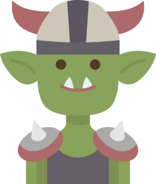
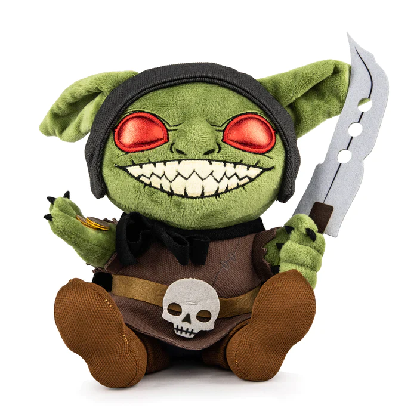

¿Los goblins: la nueva moda en mascotas?
Por Boblin el Goblin
En el extravagante mundo de Dungeons & Dragons, los aventureros son conocidos por derrotar monstruos y saquear tesoros. Pero últimamente, esta surgiendo una tendencia peculiar: ¡la adopción de goblins! ¿Goblins como mascotas? ¡Más bien!
Los goblins, esos mini-monstruos verdes que suelen ser la pesadilla de los aventureros novatos, están viviendo una especie de renacimiento como mascotas. Los jugadores de D&D de todo el mundo están tomando a goblins de sus enfrentamientos y llevándolos como mascotas. Pero, ¿por qué?
Para los goblins, esto se asemeja más a ser capturados que a ser adoptados. Imaginá ser un goblin. Un día, estás tranquilo, haciendo lo tuyo, saqueando una aldea o planeando una emboscada, y de repente te cae un grupo de aventureros que te llaman "Boblin el Goblin" y te ofrecen una ración de carne seca, 3 maníes, media taza de agua tibia y una cáscara de huevo como premio. ¿No suena como la vida de tus sueños? (no)
La razón detrás de esta extraña tendencia es, en parte, el encanto inherente de los goblins. Con sus personalidades extravagantes y su inclinación por el caos, los goblins pueden agregar una chispa única a cualquier campaña de D&D. Y, por supuesto, el hecho de que hablan Goblin, un idioma exotico, solo agrega diversión... Aunque en su mayor parte, la razón principal es la pura y completa tendencia sociópata de todo grupo de jugadores de DnD...
Pero, en última instancia, la "adopción" de goblins es más un acto de ironía y comedia que un verdadero interés en tener mascotas. Aunque los aventureros pueden pretender que están cuidando de sus goblins, la realidad es que los usan como carne de cañón en batallas, los envían a realizar las tareas más peligrosas y, en general, los tratan más como mascotas desechables que como amigos peludos.
Entonces, la próxima vez que veas un grupo de aventureros en tu mesa de D&D diciendo que "adoptaron" un goblin, no te olvides: para el goblin, es más como una pesadilla de la que no pueden escapar. Pero, al menos, está garantizado que todos en la mesa lo van a pasar bien a costa de Boblin, y al final del día, eso es lo que realmente importa en el mundo del rol.
Así que, ¿son los goblins la nueva moda en mascotas en D&D? Puede ser, siempre y cuando no seas el goblin...